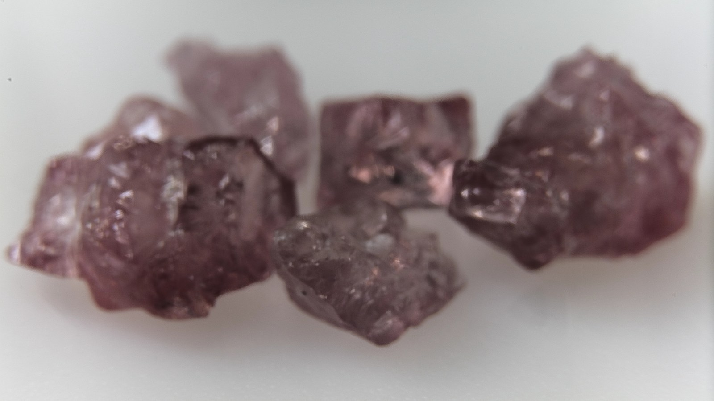
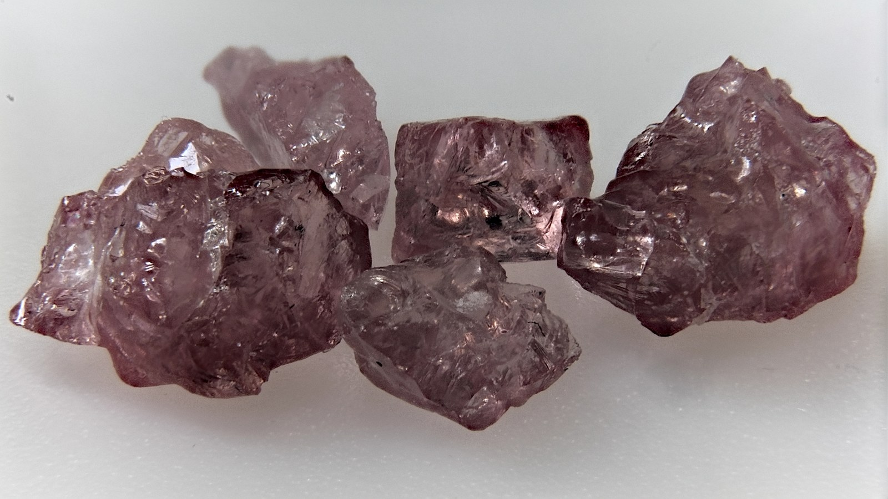
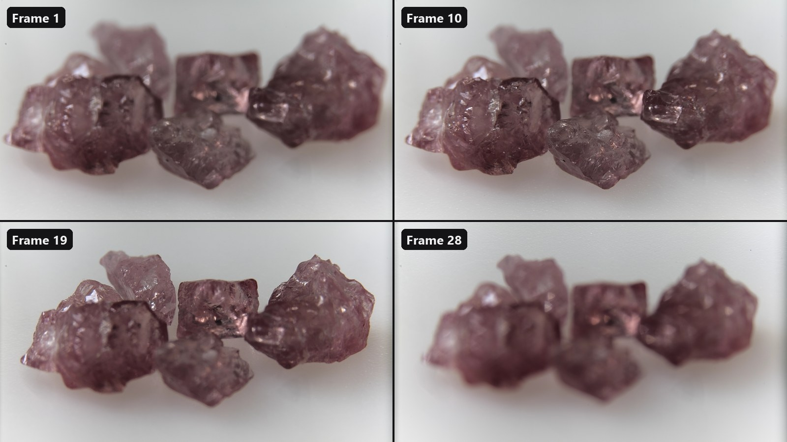
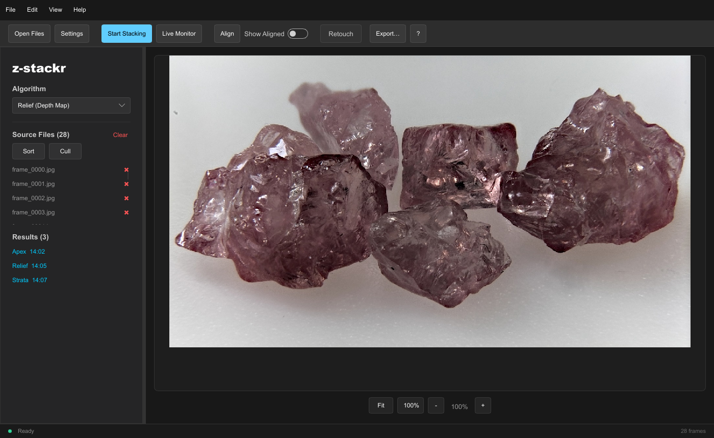

Focus stacking · Rust · desktop, command line and browser
Sharp from front to back.
z-stackr takes a series of macro or micro photographs focused at different depths, aligns them and fuses the sharp parts of each into one picture.
A lens focused close up has a very thin plane of focus. Photograph the subject again and again while the focus moves through it, and every frame holds a different slice in focus. z-stackr registers the frames onto one another, decides pixel by pixel which frame is sharpest, and blends the result without seams.
It does this in linear light, with three fusion methods to choose from, an aligner that corrects the change in magnification as the focus moves, and an optional GPU path. The same pipeline runs in a desktop app, in a command-line tool that stacks images larger than memory, and from Python.
Licence: MIT or Apache-2.0, at your option.


ONE FRAME STACKED · APEX01What it does
Aligns the frames
Corrects shift, scale, rotation and, if you ask, aspect and shear from frame to frame with a sub-pixel intensity search, matches their brightness, then crops to the area every frame covers.
Three fusion methods
Apex (Laplacian pyramid) for fine detail, Relief (focus map, guided filter and an optional multigrid depth solver) for smooth, quiet results, and Strata (guided soft blend) where every frame contributes.
Drops frames that add nothing
Auto-cull scores every frame's share of the sharp detail and leaves out the ones that contribute almost nothing.
A desktop app
Projects, drag and drop, live previews while aligning, Sort and Cull actions, retouching from a chosen frame, optional camera RAW input, and an export dialog with file-name templates.
A command-line tool
Stacks tile by tile from a scratch folder, so a stack larger than memory works too; it can stack every subfolder of a folder in one run, write all three methods from one alignment, and watch a folder and re-stack as frames arrive.
Optional GPU
Alignment, the Apex, Relief and Strata fusions and the multigrid solver can run on the graphics card, with the CPU as the reference and the fallback.
02From a series to one picture
The frames are read in natural file-name order (frame_2 before
frame_10), and the first one is the reference the others are
aligned to. Everything after decoding runs on linear-light planes, so a blend
of two frames is a blend of light, not of gamma-encoded numbers, and linear
white comes out as exactly 255 or 65 535.

03The desktop app
z-stackr-gui keeps the whole stack in memory and shows what it
does: each frame appears as it is aligned, a chip in the status strip shows
every running job with an estimate of the time left, and the result lands in
a list next to your source files. Projects remember the files, the settings
and every retouch stroke; the manual is built in (F1).

The same window also runs in the browser, at live.z-stackr.suitable-na.me: nothing is installed and the images never leave the tab. It aligns on the GPU through WebGPU and stacks in the page's memory, so very large series are stacked at a reduced size there (what differs).
04The command line
z-stackr stacks a folder of frames into one file. It writes each
aligned frame to a scratch folder as padded tiles and fuses tile by tile, so
its memory does not grow with the image size. It reads the same settings file
the desktop app writes.
z-stackr --input-dir ./frames --output-file ./stacked.tif --mode apex --tile-size 51205Getting started
z-stackr is built from source with Rust. It needs the nightly compiler (it uses portable SIMD); the repository pins the exact version, and rustup installs it on the first build. There are no ready-built programs yet.
# the desktop app
cargo build --release -p z-stackr-gui
# the command-line tool
cargo build --release -p z-stackr-cli
# either one with the GPU path, or with camera RAW input
cargo build --release -p z-stackr-gui --features gpu
cargo build --release -p z-stackr-cli --features raw
The programs are written to target/release/. Start
z-stackr-gui, drop a folder of frames on the window, choose an
algorithm and press Start Stacking.
A plain build targets every 64-bit x86 processor and uses 4-lane vectors.
For a faster build on a processor with AVX2 (Intel Haswell, AMD Zen and
newer), set RUSTFLAGS="-C target-cpu=x86-64-v3"; see
building for all the options.
06Status
- Version 1.0.0. The desktop app and the command-line tool are complete and share one pipeline and one settings file.
- There are no ready-built downloads yet; build from source, or use the browser version.
- EXIF metadata is copied to PNG and JPEG results, not to TIFF, and no color profile is applied when frames are read.
- Python bindings (
zstackr) are built with maturin and are not part of the main workspace.